地政学
ケルンはライン川沿いの西ドイツ交通軸にあり、ルール、ベネルクス、フランクフルト、ボンを結びます。古代ローマの植民都市、司教座、戦後西独の周縁中枢が重なるため、国境に近い結節として読みます。欧州軸の街です。
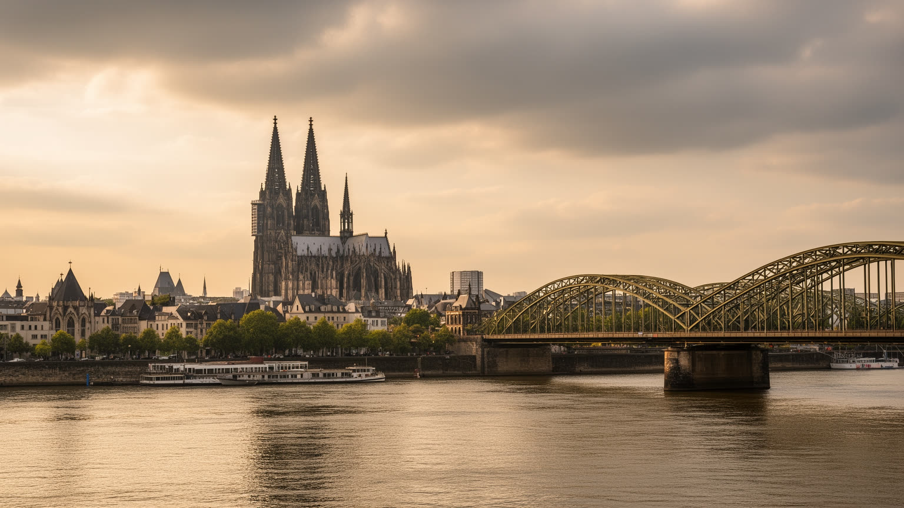
🇩🇪 ドイツ / ヨーロッパ / World City Atlas
ライン川の交通、ローマ以来の都市層、大聖堂の巡礼、メディアと保険、見本市、カーニバル、移民地区が重なるドイツ西部の都市です。
都市の骨格
ケルンはライン川の港湾、鉄道の結節、司教座の記憶、戦後復興の街路が重なり、宗教都市と商業都市の顔を同時に持ちます。
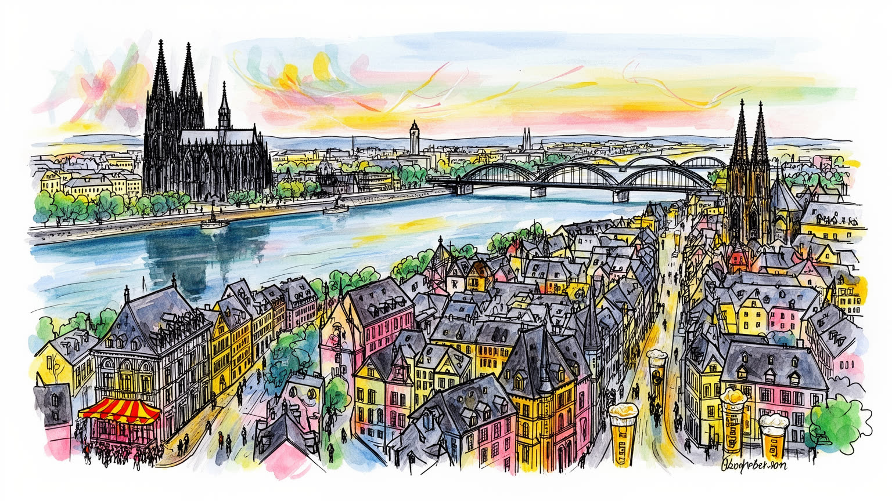
ケルンはライン川沿いの西ドイツ交通軸にあり、ルール、ベネルクス、フランクフルト、ボンを結びます。古代ローマの植民都市、司教座、戦後西独の周縁中枢が重なるため、国境に近い結節として読みます。欧州軸の街です。
放送、保険、化学、見本市、大学、医療、観光、物流が雇用を支えます。大企業の管理職だけでなく、倉庫、港湾、清掃、宿泊、飲食、介護、イベント運営の労働が都市のにぎわいを支えます。賃料上昇も焦点であり続けます。
大聖堂、ロマネスク教会、ユダヤ史、移民の礼拝、カーニバル、ケルシュ文化が近くに並びます。信仰は観光名所に閉じず、祭礼、墓地、学校、地域団体、酒場の会話へ流れ込みます。寛容も問われる街です。深い都市です。
旧市街、ライン河岸、博物館、サッカー、クリスマスマーケットを訪ねる観光客の横で、住民は通勤、家賃、洪水リスク、騒音、夜の安全、移民支援と向き合います。名所と普段着の生活が近い都市です。水辺も身近な街です。
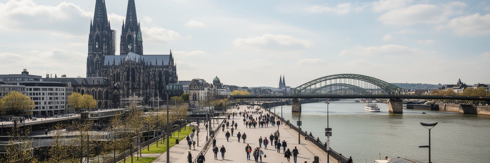
ケルンを理解する入口は、ライン川を単なる眺めではなく都市の骨格として見ることにあります。川は古代ローマの植民都市を北海と内陸へ結び、中世には商人、巡礼者、司教権力、関税、橋、市場を集めました。現在も川沿いには鉄道橋、道路橋、遊歩道、港湾、展示施設、住宅開発が並び、物流と観光と日常散歩が同じ水辺を使います。大聖堂は駅前に巨大な垂直軸を立て、到着した人に都市の中心を即座に示しますが、その足元では通勤者、学生、観光客、路上生活者、警備、土産物店が交差します。右岸のドイツ地区、左岸の旧市街、南北へ伸びるライン河岸を歩くと、川が境界であると同時に接続路であることが分かります。洪水の記憶も重要で、水位標、護岸、地下空間の管理は美しい景観の裏側にある都市技術です。ケルンの地理は、ラインを渡る橋の本数、駅の近さ、河岸の再開発、港の機能、祭りの動線によって経験されます。さらに川は、街の心理的な向きも決めます。夕方に河岸へ出る習慣、橋を渡って眺めを確かめる観光、花火や祭りの群衆、ランニングや自転車の道は、水辺を共有財産に変えます。一方で河岸の土地は高く、住宅、ホテル、港湾、公共空間の争いも起きます。鉄道駅と大聖堂が近い配置は、川の都市を徒歩で理解しやすくするが、混雑も一点へ集めます。川を見ることは、商業、信仰、交通、防災を同時に読むことです。
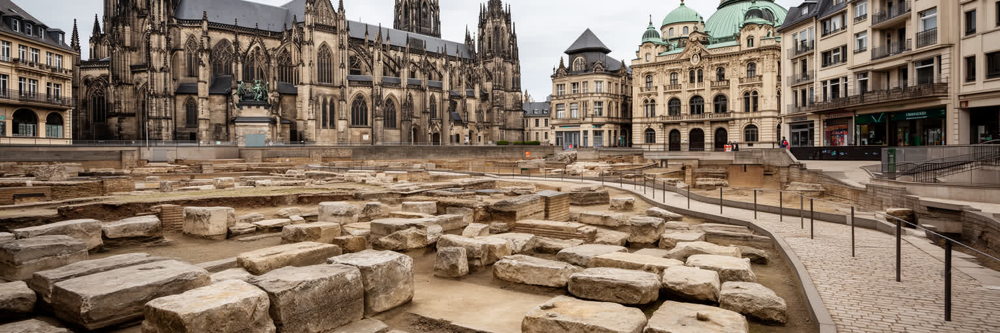
ケルンの古さは、観光用の物語ではなく街路の下に残る都市の層です。ローマ帝国の植民都市として始まったケルンには、城壁、地下遺構、水道、墓地、道路の記憶が重なり、その上に中世の教会、市場、ギルド、商家、司教権力が築かれました。大聖堂はその最も大きな象徴ですが、十二のロマネスク教会、旧市街の通り、博物館、考古学的展示を合わせて見ると、都市が一度で完成したのではなく、何度も壊れ、埋まり、使い直されてきたことが分かります。第二次世界大戦の空襲で市街地は激しく破壊され、戦後復興は中世の姿をそのまま戻したわけではありません。自動車道路、戦後住宅、現代商業、保存建築が混ざるため、ケルンの歴史地区には真正性と再建の緊張があります。古い石を見せることは誇りである一方、破壊と復興の選択を隠してしまう危険もあります。地下鉄工事や再開発で遺構が現れるたび、都市は便利さと保存の優先順位を問われます。学校教育や博物館展示は、遺跡を遠い過去ではなく、現代の市民が足元に抱える公共財として扱います。市場広場や教会前の石畳は、観光写真の背景であると同時に、戦災後に何を戻し何を諦めたかを示す資料でもあります。ケルンを歩く時は、残ったもの、再建されたもの、失われたものを区別しながら、都市の記憶が現在の商業と暮らしにどう使われているかを見る必要があります。今も問います。
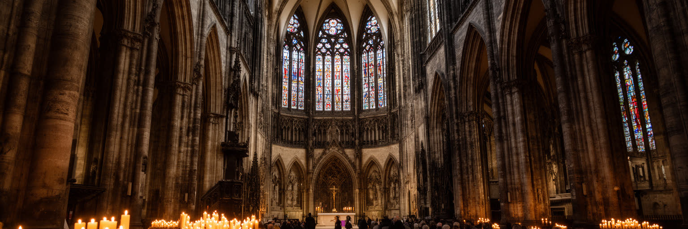
ケルン大聖堂は世界遺産であり、駅前の観光名所であり、同時に司教座聖堂として今も信仰の場です。巨大な塔、聖遺物、ステンドグラス、ミサ、聖歌、祈りの沈黙は、外から訪れる人に都市の宗教的な重みを伝えます。しかし大聖堂だけを見てケルンの宗教を理解したことにはなりません。ロマネスク教会、ユダヤ共同体の歴史、モスク、移民の教会、墓地、学校、福祉団体、宗教行事は、より細かな生活の暦を作っています。観光客がカメラを向ける空間で、信者は祈り、職員は維持管理をし、警備は安全を守り、周辺の店は来訪者を迎えます。宗教建築は美しい背景である前に、都市のケアと記憶を支える制度でもあります。ケルンはカトリック色の強い都市として知られるが、現代の住民は世俗的な生活、多宗教、無宗教を含んでいます。大聖堂の周辺では、静かな祈りと大量観光の足音がぶつかるため、空間の使い方そのものが都市倫理になります。寄付、修復職人、音楽家、案内人、清掃員の仕事も、信仰の場所を日々支えます。祝祭日や追悼の時には、普段は観光客で満ちる空間が、市民の祈りと記憶を受け止める場へ変わります。宗教施設は社会福祉や教育とも結びつき、信仰の有無を超えて都市の安全網を作ります。信仰の場所を読むには、尖塔の高さだけでなく、誰が入れるか、誰が守るか、過去の迫害をどう記憶するかを見る必要があります。
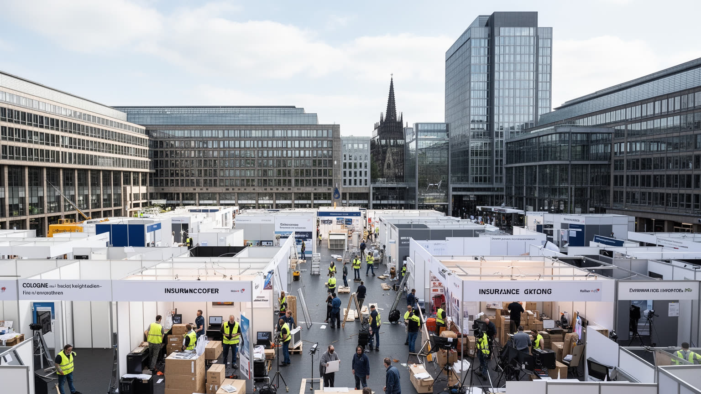
ケルンの経済は、ライン河畔の古い商業だけでなく、メディア、保険、化学、見本市、大学、医療、観光、物流が重なることで成り立ちます。西部ドイツ放送をはじめとする放送、番組づくり、広告、音楽、ゲーム、イベント関連の仕事は、都市に創造産業の厚みを与えてきました。大規模見本市は鉄道駅、空港、ホテル、飲食、通訳、警備、清掃、設営、配送を一度に動かし、短い会期のために多くの臨時労働と専門職を必要とします。保険や化学の企業は、華やかな観光の背後で安定した事務、研究、営業、管理の雇用を支えます。ですが都市経済の強さは、オフィスの数だけでは測れません。番組づくりの締切、展示ブースの夜間設営、ホテル清掃、飲食店の仕込み、倉庫の荷さばきがなければ、都市のイベント性は成立しません。大学や専門学校は人材を送り出し、若い番組づくり者は小さなスタジオや共同オフィスで仕事を始めます。成功した産業ほど、住宅費や場所代を押し上げ、新しい挑戦の余地を狭めることもあります。保険や放送の事務職は安定を生む一方、イベントや観光の雇用は季節変動を受けやすいです。都市政策は両方の働き方を見なければなりません。ケルンの産業を読むことは、企業名を並べることではなく、文化と商業を現場で動かす人の時間を見ることでもあります。賃料が上がるほど、若い作り手や低賃金のサービス労働者が中心近くに残れるかが重要になります。
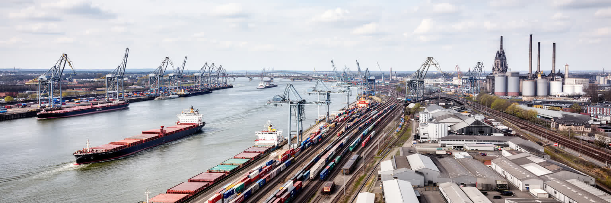
ケルンは観光都市として記憶されやすいが、ライン川、鉄道、高速道路、空港を結ぶ物流都市でもあります。ラインは欧州内陸水運の大動脈であり、石油製品、化学品、建材、機械、消費財が水上、鉄道、トラックへ載せ替えられます。市内外の港湾や工業地帯は、旧市街の石畳とは違う都市の顔を持ち、倉庫、タンク、クレーン、貨物線、配送センターが日常消費を支えています。近くのボン、デュッセルドルフ、ルール地方、ベネルクス方面との接続は、ケルンを単独の市域ではなくライン＝ルールの広域経済の一部にします。物流は便利な買い物や見本市を支える一方、騒音、排気、河岸の土地利用、危険物輸送、労働時間の問題も生みます。水辺の再開発が住宅やオフィスを増やすほど、港湾機能をどこに残すのかという緊張が強まります。夜間配送や倉庫作業は観光客の目に入りにくいが、翌朝の店頭、病院の物資、展示会の開幕を支えています。脱炭素の時代には、水運や鉄道を生かしながら、住宅地への負担を減らす設計も問われます。港の労働は天候、河川水位、国際価格にも左右され、都市経済が遠い市場と結ばれていることを示します。ケルンを読むには、大聖堂の写真だけでなく、橋を渡る貨物列車、郊外の倉庫、河岸の工業施設を見る必要があります。見えにくい物流こそ、都市の食、建設、イベント、医療を動かす基盤です。
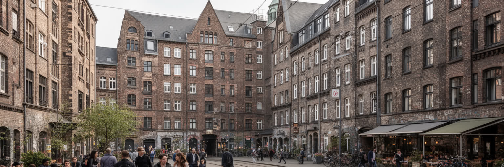
ケルンの暮らしは、中心部の歴史的な密度と、外側へ広がる住宅地区の落ち着きの間で組み立てられます。学生、メディア関係者、保険会社の職員、医療従事者、移民家族、高齢者、イベント労働者は、同じ都市にいても異なる家賃、通勤時間、言語、余暇を持ちます。エーレンフェルト、ニッペス、ミュールハイム、ズュートシュタットのような地区では、古い工場、集合住宅、カフェ、移民の店、音楽の場、子育て施設が混ざり、都市の生活文化を作ります。人気地区では再開発や短期滞在需要が家賃を押し上げ、長く住んだ人や小さな店を圧迫します。中心に近いことは仕事や文化へのアクセスを良くするが、騒音、観光客、夜の混雑、部屋の狭さも伴います。郊外に離れれば住宅は落ち着くが、通勤や深夜帰宅、保育、介護の負担は増えます。トラムや近郊鉄道の駅前は生活の結節点になり、スーパー、薬局、学校、スポーツクラブ、移民の食料品店が日々の範囲を決めます。高齢者や子育て世帯にとっては、段差、夜道、公園、医療への近さが家賃と同じくらい重要になります。地区の小さな祭りや市場は、匿名化しやすい大都市で顔の見える関係を保ちます。ケルンの生活を評価するには、旧市街の美しさだけでなく、家賃、公共交通、学校、医療、緑地、近所の店がどれだけ使いやすいかを見る必要があります。住み続けられる地区があって初めて、都市の寛容さは言葉ではなく現実になります。
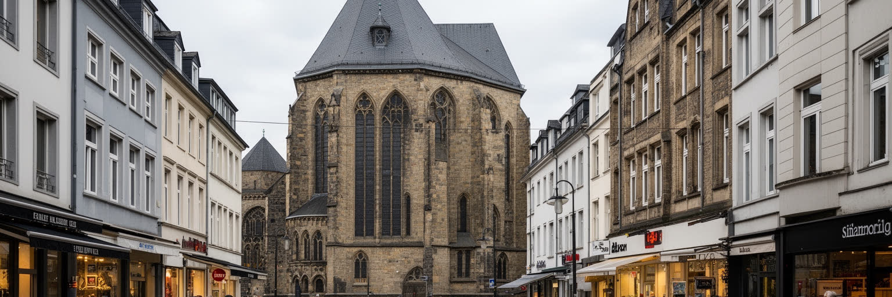
ケルンは開放的なライン都市として語られる一方、ユダヤ人共同体の長い歴史、迫害、追放、ホロコーストの記憶を抱えています。中世から近代までのユダヤ史は都市中心部の考古学、記念施設、教育の課題として残り、現在の宗教的安全とも結びつきます。さらに戦後の労働移民、トルコ系、イタリア系、東欧系、アラブ系、アフリカ系、近年の難民や留学生が、地区ごとの商店、礼拝所、学校、飲食、スポーツ、音楽を通じて都市文化を作ってきました。多文化性は食や祭りの楽しさとして見えやすいが、住居探し、資格認定、言語、差別、警察との関係、子どもの教育、医療アクセスという現実もあります。カーニバルの陽気な寛容と、日常の排除や偏見は同じ都市に並びます。学校の教室、役所の窓口、病院の通訳、地域スポーツの更衣室では、統合が抽象語ではなく毎日の手続きになります。記憶施設で過去を学ぶことと、現在の少数者を守ることは切り離せません。移民の店や礼拝所がある地区は、観光客には異国情緒に見えても、住民には送金、食材、相談、仕事探しの実用的な基盤です。ケルンを読むには、移民文化を観光的に消費するだけでなく、誰が市民として扱われ、誰が外部者と見なされるのかを問う必要があります。ユダヤ史を記憶し、現在の多宗教の住民を守ることは、都市の寛容を試す具体的な仕事です。日々の焦点です。
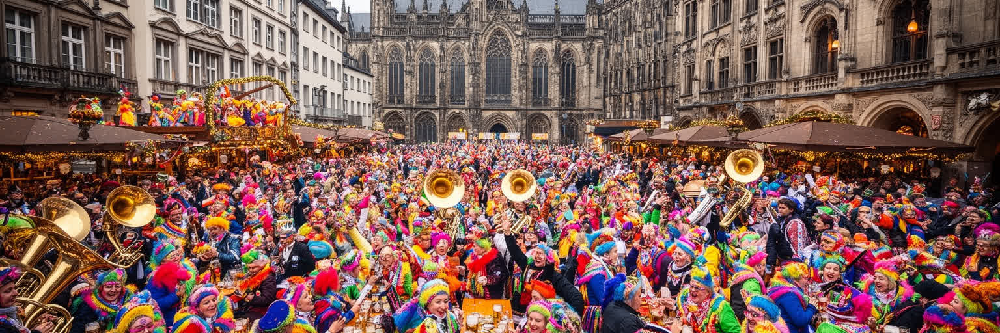
ケルンのカーニバルは、観光イベントである前に、市民が街を一時的に作り替える巨大な社会装置です。仮装、行列、音楽、風刺、地域クラブ、学校、企業、酒場、路上の人混みが重なり、普段の階層や肩書きを少しずらします。ケルシュを出す酒場は、飲食店であると同時に、地元語、サッカー、政治の冗談、近所の噂が交わる公共的な部屋になります。祝祭は都市の親密さを作りますが、同時に排除も生み得ます。内輪の冗談が外国人や少数者を置き去りにすることもあり、混雑、飲酒、性暴力、安全管理、ごみ、騒音は重大な焦点になります。カーニバルを支える人も多いです。衣装づくり、警備、清掃、救急、交通整理、飲食、舞台設営、音響、行政手続きがなければ、都市の楽しさは維持できません。地域クラブの準備は一年を通じて続き、祝祭は短い週末だけでなく、世代間のつながりや地区の誇りを維持する作業でもあります。観光客が増えるほど、地元の習慣をどう開き、どう守るかが問われます。酒場の親密さも、誰に開かれているかを常に確かめる必要があります。音楽と方言は一体感を生みますが、初めて来た人には壁にもなります。ケルンの文化を読むには、明るい祝祭の表面だけでなく、誰が参加しやすく、誰が働き、誰が危険にさらされるのかを見る必要があります。良い祝祭は、自由な解放感と、弱い人を守るルールの両方によって成り立ちます。
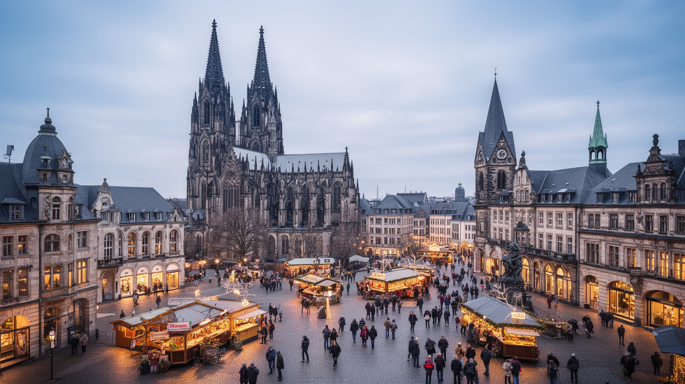
ケルン観光は、大聖堂から始まり、旧市街、ライン河岸、ホーエンツォレルン橋、博物館、ロマネスク教会、チョコレート博物館、クリスマスマーケット、カーニバルへ広がります。駅を出てすぐ大聖堂が現れる劇的な導入は強力ですが、都市の魅力は一枚の写真で完結しません。川沿いを歩き、右岸から旧市街を眺め、博物館でローマと中世の層を読み、地区の酒場や移民の店に入ることで、観光名所と生活都市の距離が近いことが分かります。観光は雇用を生み、文化施設を支え、都市の国際的な認知を高めます。一方で、短期滞在者向けの店が増え、混雑や価格上昇が住民の普段使いを圧迫することもあります。宗教施設では祈りの場としての静けさを守る必要があり、記念施設では写真消費だけでなく学ぶ態度が求められます。来訪者にとって便利な駅前の集中は、警備、案内、清掃、トイレ、ベンチ、混雑整理の負担を一箇所へ集めます。観光都市の快適さは、見えにくい公共サービスと現場労働に依存しています。冬の市場や祭りの時期には、季節労働、交通規制、宿泊価格が日常の負担として現れます。混雑の少ない地区へ足を延ばせば、都市の普段の速度も見えてきます。ケルンの遺産を楽しむとは、古い建物を眺めるだけではなく、破壊、再建、信仰、商業、住民の日常がどう折り合っているかを読むことです。観光の質は、訪れる人と住む人の双方が街を使い続けられるかで決まります。
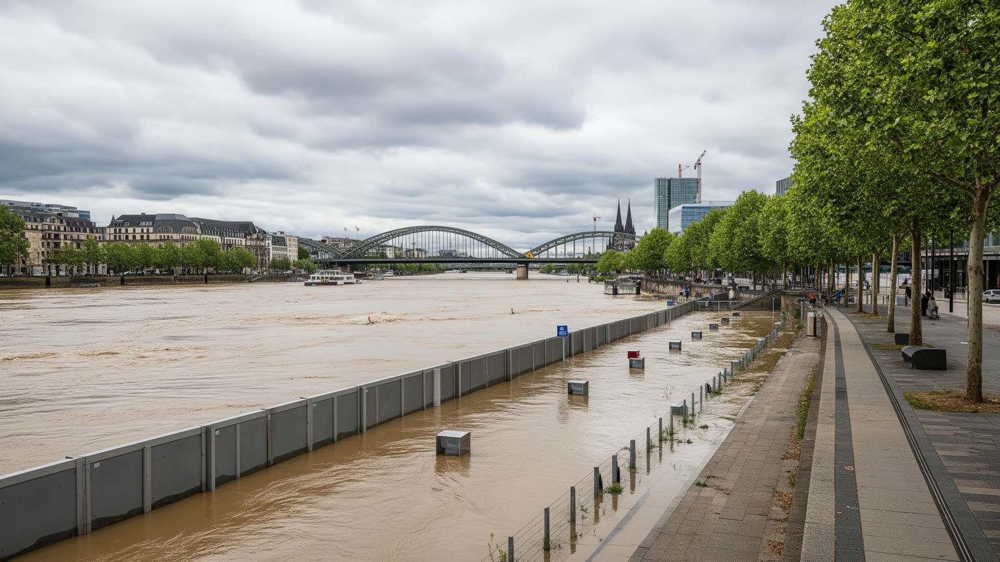
ライン川はケルンの魅力を作りますが、同時に洪水リスクを都市へ持ち込みます。河岸の遊歩道、地下施設、住宅、道路、鉄道、観光施設は、水位が上がる時に守るべき対象になります。過去の洪水は水位標や住民の記憶に残り、仮設防壁、警報、避難、交通規制、清掃、保険、建築規制が都市運営の一部になっています。気候変動で豪雨や熱波が強まると、水害だけでなく、夏の暑さ、街路樹の管理、住宅の断熱、冷房費、屋外労働者の健康も重要になります。川沿いの再開発は魅力的な住宅やオフィスを生みますが、水辺へ建て込むほど、災害時の弱さも増します。防災は行政の計画だけでなく、住民が水位情報を理解し、高齢者や外国人へ情報を届け、店や文化施設が復旧できる仕組みを持つことで初めて機能します。地下空間や駅周辺は便利な反面、水害時には弱点になりやすいです。暑さ対策では、街路樹、日陰、噴水、公共施設の開放が、観光客だけでなく高齢者や屋外労働者を守ります。保険に入れる人と入れない人、改修できる住宅とできない住宅の差も、気候リスクを不平等にします。気候適応は景観整備ではなく、暮らしを守る政策です。ケルンの気候適応を読むには、美しい河岸と同時に、排水、避難路、日陰、公共トイレ、涼める場所、保険負担を見る必要があります。水と近く暮らす都市の豊かさは、水の危険を忘れない制度によって支えられています。